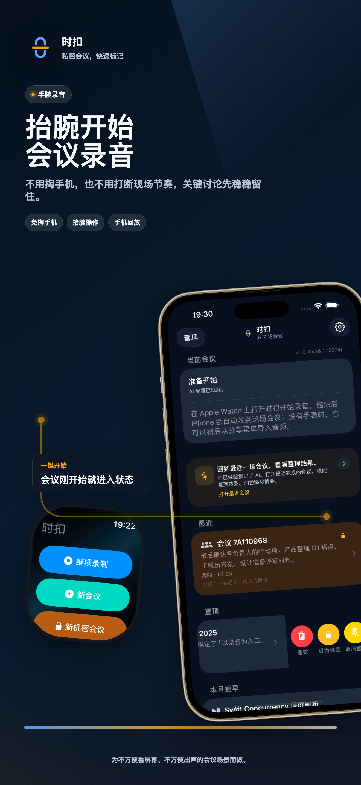
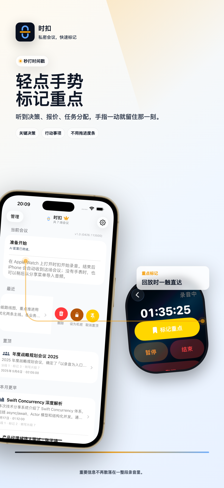
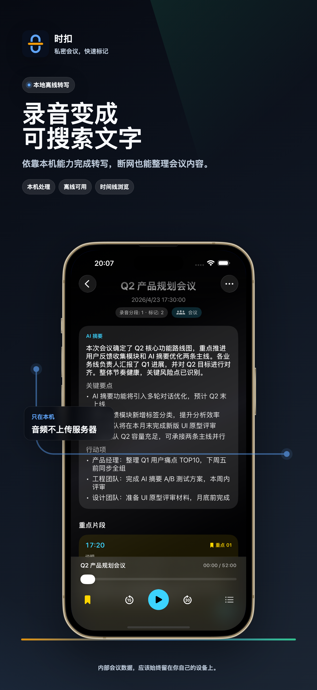
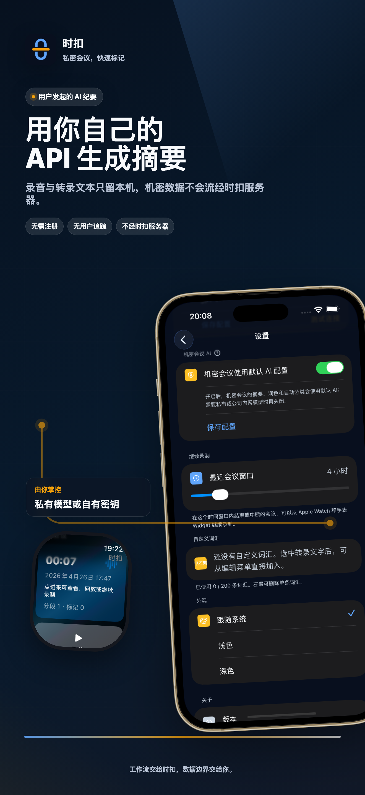
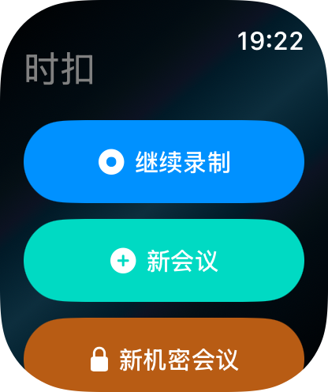
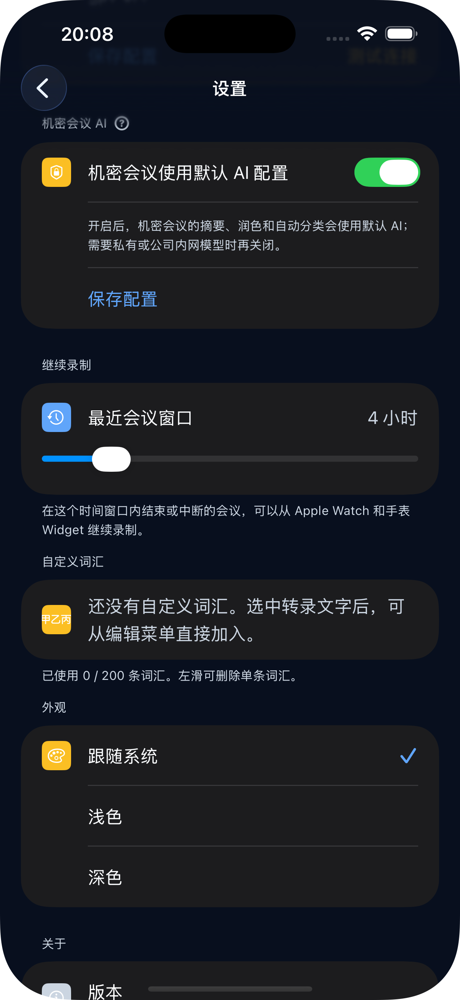
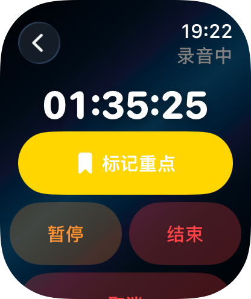

时扣是专为 iPhone 与智能手表打造的私密会议助手。抬腕录音，互点两下秒打时间戳，设备本地离线转写，并把会议纪要变成下一步行动。
时扣围绕一个清晰流程设计：在手表上开始录音，听到重点时标记，回到手机本地转写，再生成会议纪要并整理后续行动。




开会、培训、电话沟通时不用掏手机。直接抬腕一键开启独立录音，双手仍然留给现场；结束后回到手机继续整理。

语音转文字在设备本地完成，无需联网。会议音频不会发到时扣服务器，内部讨论和客户信息都留在你的设备上。

听到决策、报价、任务分配或确认信息时，互点两下秒打时间戳。回放时点击重点直接跳到那一刻，不再拖着进度条找答案。

用本机 Local AI 或你配置的 AI 端点生成纪要，再把负责人、截止时间和安排整理成可编辑的后续事项。
从会议纪要生成可编辑提醒，确认负责人和截止时间后再保存，让下一步真正有人跟进。
将会议中的时间安排整理为日历草稿，检查时间与参与人，只保存真正需要的日程。